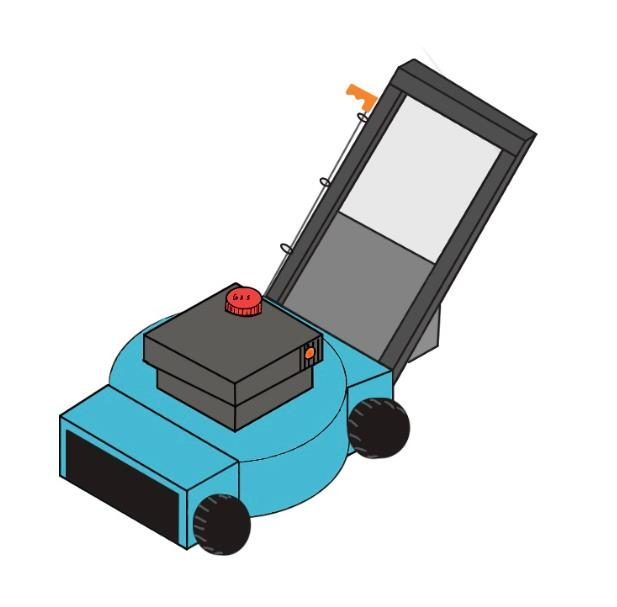
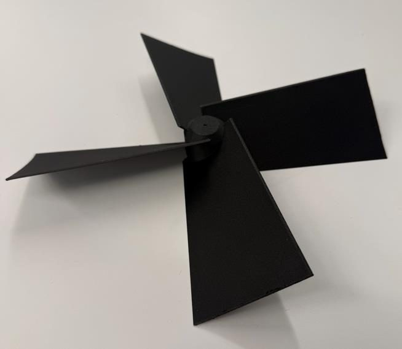
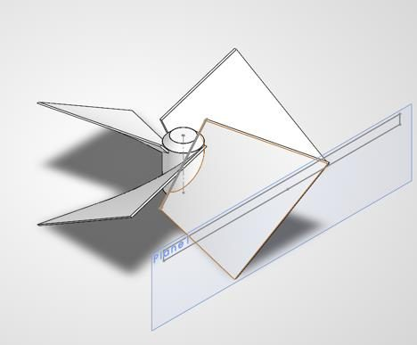
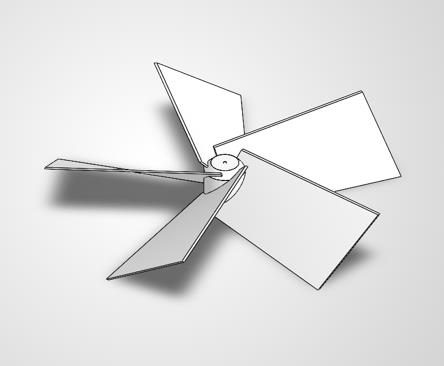
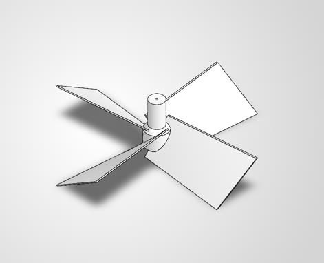
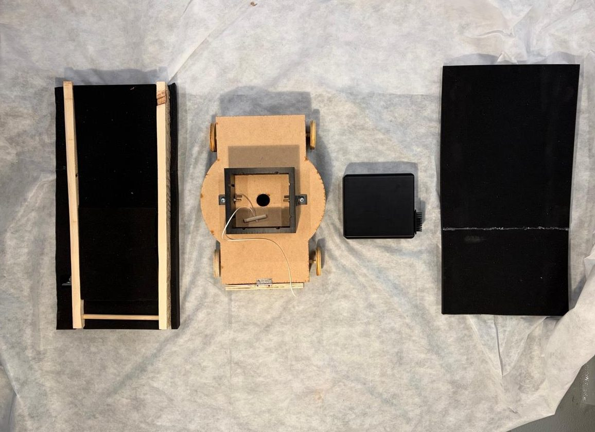
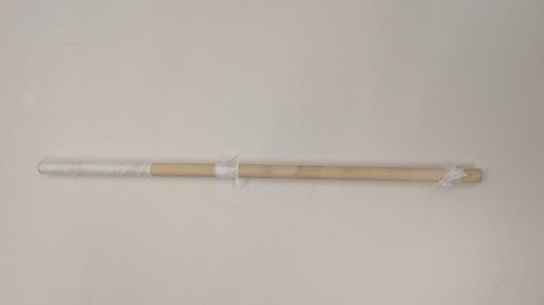
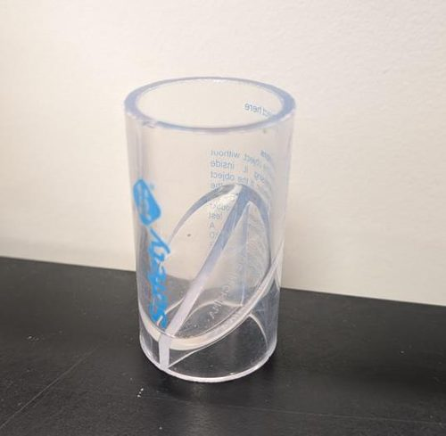

The Mighty Mower

Overview
Our team was asked to create a lawn mower style toy to be produced by Melissa & Doug for children ages 6 to 8. The toy simulates groundskeeping with the mechanisms of a real lawn mower, so children can engage with it and learn from it. We researched and benchmarked existing products, generated concepts, chose one with a weighted decision matrix, then designed, built, tested, and presented it to an audience of TAs, professors, Melissa & Doug employees, and students.
Benchmarking and requirements
We benchmarked three products: the Melissa & Doug Snappy Turtle Mower, the TORO Recycler Push Lawn Mower, and the Young Explorers Have a Ball Push Toy. From that research we set four metrics (W is a want, C is a constraint).
| Metric | Target value |
|---|---|
| Operates on multiple surfaces (W) | Can be used on at least 3 different surfaces |
| Moves freely and has moving components (W) | At least two moving components |
| Safe for end user (C) | Meets ASTM F963 and ISO 8124 |
| Reasonable cost of production (C) | $20 budget for custom-ordered parts needed for the prototype |
Concept generation
Early sketches explored a magnetic underside to pick up magnetic balls, a pull cord to spin the blade and release the balls, and realism through speakers and lights. We built a quick foamcore prototype and sketched a catch bin layout around a fan blade.
Final concept
We finalized the scoop fan blade design for these reasons:
- It is a more realistic mechanism for education.
- It has fewer reliability concerns.
- It expands reusability and ways to play, since it is not limited to included magnetic objects.
- It is easier to produce and assemble.


Blade design
We designed, manufactured, and tested 3 blade designs in 3 different materials.



Major components
- Body: designed to fit the 245 mm blade.
- Catch ramp: collects the balls and toys.
- Fake motor: designed for realism with a separable design that houses the electronics, plus a realistic exhaust manifold.
- Electronics: an Arduino Mega2560 (a placeholder for an ESP32) controls a 5V DC motor that spins the blade and a DFPlayer module that plays lawn mower sounds from a micro SD card through a small speaker.
Manufacturing
- Woodshop: side body pieces, wheels, handles, pull-cord handle, and back catch and release plate.
- Laser cutter: lawnmower body top and curved body pieces.
- 3D printing: lawnmower blade and motor mount in PA6-CF, and catch plate and on-button mount in PETG.

Safety testing
Before the final presentation we tested the toy against child safety requirements.
- Sharp edge: checked whether any piece can cut replica skin (pressure-sensitive self-adhesive PTFE tape).
- Small parts: checked that no part fits in a child's esophagus, using a cylinder of 1.25 inch diameter and 2.25 inch length.
- Use and abuse: twisted, pulled, and pushed all parts with 5 lbs of force to see whether anything breaks off, then ran the other tests on any broken pieces.


Validation
| Want or constraint | Met? | How it was validated |
|---|---|---|
| Operates on multiple surfaces (W) | Yes | Operated on tile, grass, and concrete |
| Moves freely and has moving components (W) | Yes | Has a moving fan blade and a pull cord |
| Safe for end user (C) | Yes | Sharp edge, small parts, and use and abuse testing |
| Reasonable cost of production (C) | Yes | Purchased parts did not exceed $20 |
Path forward
The Mighty Mower met all wants and constraints. For a final product we would:
- Give the motor more power so it can push heavier objects.
- Finalize the design of the catch ramp.
- Find a better way to integrate the sound feature.
- Make manufacturing more precise, especially the wheels, so it rolls better.